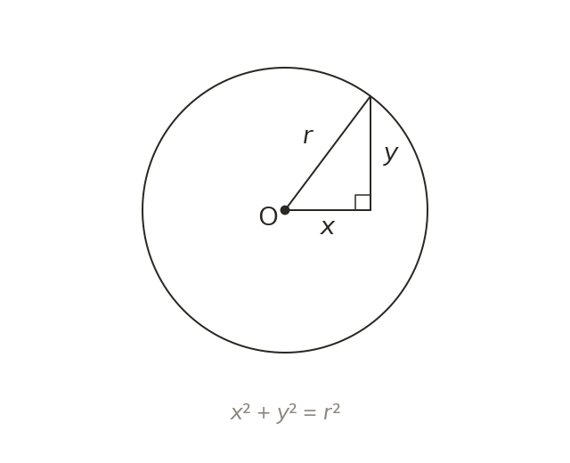

A circle from Pythagoras
x² + y² = r² is a circle centred on the origin. Every point on it is r from the origin, by Pythagoras.
x² + y² = r² is a circle centred on the origin with radius r. It follows from Pythagoras, since every point on the circle is exactly r away from the origin.